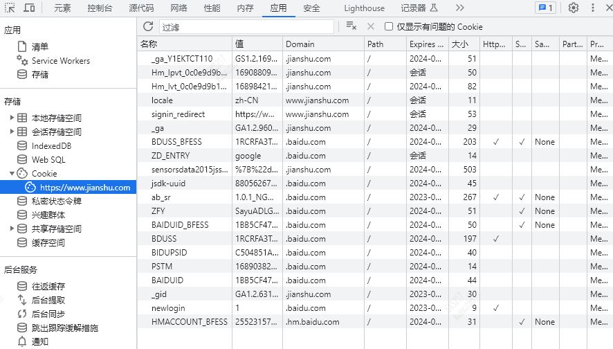

关于Cookie跨域的问题
一、Cookie的属性
一个域名下面可能存在着很多个cookie对象，cookie具有多个属性：
- name字段为一个cookie的名称
- value字段为一个cookie的值
- domain字段为可以访问此cookie的域名，Servlet中通过setDomain()设置

非顶级域名，如二级域名或者三级域名，设置的cookie的domain只能为顶级域名或者二级域名或者三级域名本身，不能设置其他二级域名的cookie，否则cookie无法生成。（cookie不能跨域）
顶级域名只能设置domain为顶级域名，不能设置为二级域名或者三级域名，否则cookie无法生成。
二级域名能读取设置了domain为顶级域名或者自身的cookie，不能读取其他二级域名domain的cookie。所以要想cookie在多个二级域名中共享，需要设置domain为顶级域名，这样就可以在所有二级域名里面或者到这个cookie的值了。
顶级域名只能获取到domain设置为顶级域名的cookie，其他domain设置为二级域名的无法获取。
- path字段为可以访问此cookie的页面路径。 比如
domain是abc.com,path是/test，那么只有/test路径下的页面可以读取此cookie。Servlet中通过setPath()设置，”/“表示根路径 - expires/Max-Age 字段为此cookie超时时间。若设置其值为一个时间，那么当到达此时间后，此cookie失效。不设置的话默认值是Session，意思是cookie会和session一起失效。当
浏览器关闭(不是浏览器标签页，而是整个浏览器) 后，此cookie失效。 - size字段 此cookie大小。
- http字段 cookie的http only属性。若此属性为true，则只有在http请求头中会带有此cookie的信息，而不能通过document.cookie来访问此cookie。
- secure 字段 设置是否只能通过https来传递此条cookie
二、Cookie的路径
Cookie的属性其中有一个属性是路径。有些人认为Cookie的路径指的是Cookie在客户端的保存路径，其实并不是。Cookie的路径是在服务器创建Cookie时设置的，它的作用是决定浏览器访问服务器的某个资源时，需要将浏览器端保存的那些Cookie归还给服务器。
三、Cookie跨域setDomain和setPath
正常的cookie只能在一个应用中共享，即一个cookie只能由创建它的应用获得。
1.可在同一应用服务器内共享方法：
设置cookie.setPath(“/“); 假设本机tomcat/webapp下面有两个应用：cas和webapp_b：
- 1）原来在cas下面设置的cookie，在webapp_b下面获取不到，path默认是产生cookie的应用的路径。
- 2）若在cas下面设置cookie的时候，增加一条
cookie.setPath("/");或者cookie.setPath("/webapp_b/");就可以在webapp_b下面获取到cas设置的cookie了。 - 3）此处的参数，是相对于
应用服务器存放应用的文件夹的根目录而言的(比如tomcat下面的webapp)，因此cookie.setPath(“/“);之后，可以在webapp文件夹下的所有应用共享cookie，而cookie.setPath(“/webapp_b/“);是指cas应用设置的cookie只能在webapp_b应用下的获得，即便是产生这个cookie的cas应用也不可以。 - 4）设置cookie.setPath(“/webapp_b/jsp”)或者cookie.setPath(“/webapp_b/jsp/“)的时候，只有在webapp_b/jsp下面可以获得cookie，在webapp_b下面但是在jsp文件夹外的都不能获得cookie。
- 5）设置cookie.setPath(“/webapp_b”);，是指在webapp_b下面才可以使用cookie，这样就不可以在产生cookie的应用cas下面获取cookie了
- 6）有多条cookie.setPath(“XXX”);语句的时候，起作用的以
最后一条为准。
2.跨域共享cookie的方法：
设置cookie.setDomain(“.jszx.com”);假设 A机所在的域：home.langchao.com,A有应用cas B机所在的域：jszx.com，B有应用webapp_b ：
- 1）在cas下面设置cookie的时候，增加cookie.setDomain(“.jszx.com”)，这样在webapp_b下面就可以取到cookie。
- 2）这个参数必须以“.”开始。
- 3）输入url访问webapp_b的时候，必须输入域名才能解析。比如说在A机器输入：http://lc-bsp.jszx.com:8080/webapp_b,可以获取cas在客户端设置的cookie，而B机器访问本机的应用，输入：http://localhost:8080/webapp_b则不可以获得cookie。
- 4）设置了cookie.setDomain(“.jszx.com”);，还可以在默认的home.langchao.com下面共享。
数必须以“.”开始。
摘自作者：拾壹北
链接：https://www.jianshu.com/p/432ec6097003